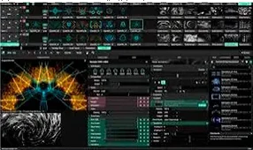

Resolume Arena
- Software avanzado de VJing y media server para composición y mapping de vídeo en directo con múltiples capas
- Herramientas completas de proyección mapping (Arena) incluyendo mezcla de bordes (edge blending) y deformación geométrica (warping)
- Sincronización SMPTE timecode para integración perfecta con sistemas de iluminación y controladores de espectáculo (show control)
- Gestión nativa de protocolos de comunicación como OSC, MIDI, DMX/Art-Net y enrutamiento IP mediante NDI y Spout
- Flujo de trabajo en tiempo real con reproducción optimizada del códec DXV y aplicación de efectos visuales al vuelo
- Integración directa con capturadoras de vídeo profesionales como Blackmagic Design y AJA para señales SDI/HDMI